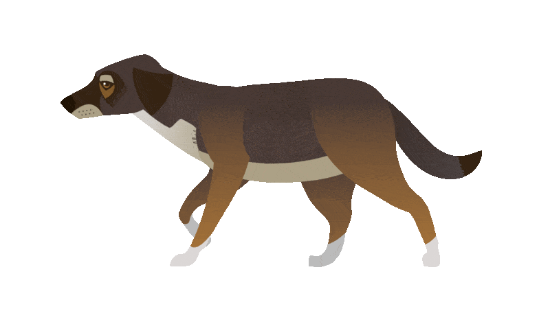

In front of you is a model of the Dynamic City, disassembled into its elements. I've been studying this city for many years and can easily navigate through it! Give it a try! Assemble the model of the Dynamic City, and in return, I'll share with you a few stories about this picture!
